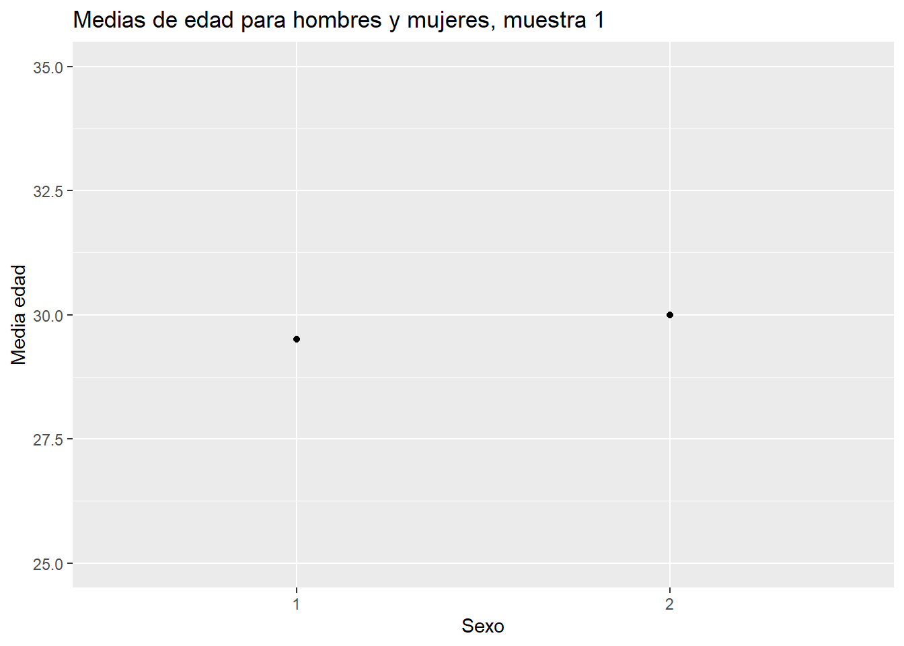

library(pacman)
pacman::p_load(tidyverse, # colección de paquetes para manipulación de datos
car, # para recodificar
psych, # para analizar datos
sjmisc, # para analizar datos
# srvyr, # para estimación de IC y ponderadores
# Publish, # para IC
kableExtra) # para presentación de tablas
options(scipen = 999) # para desactivar notacion cientifica
rm(list = ls()) # para limpiar el entorno de trabajoInferencia 3: Pruebas de hipótesis
Completar hasta as 11:59 PM del martes, 17 de octubre de 2023
Objetivo de la práctica
El objetivo de esta guía práctica es continuar profundizando en la inferencia estadística, en particular en contráste de hipótesis de diferencia de medias. Este tema se desarrolló en la sesión 7.
Test de hipótesis para diferencia de medias
Primero, carguemos las librerías necesarias:
Vamos a testear la siguiente hipótesis:
- \(H_a\): existen diferencias de edad entre hombres y mujeres
Y su correspondiente hipótesis nula:
- \(H_0\): no existen diferencias de edad entre hombres y mujeres
Generación de datos (muestra_3) y descriptivos:
muestra_3 <- data.frame(edad=c(33,35,23,32,24,25,29,31,32,31),
sexo=c(1,1,2,1,2,2,2,1,1,1))
mean(muestra_3$edad)[1] 29.5muestra_3$sexo <- as.factor(muestra_3$sexo)
muestra_3 %>%
group_by(sexo) %>%
summarise(media=mean(edad)) # A tibble: 2 × 2
sexo media
<fct> <dbl>
1 1 32.3
2 2 25.2Gráfico descriptivo:
muestra_3 %>%
group_by(sexo) %>%
summarise(media=mean(edad)) %>%
ggplot(aes(x=sexo, y=media)) +
geom_point() +
ylim(25,35) +
labs(title = "Medias de edad para hombres y mujeres, muestra 3",
x = "Sexo",
y = "Media edad")
Prueba t de diferencia de medias:
t.test(edad ~ sexo,data=muestra_3)
Welch Two Sample t-test
data: edad by sexo
t = 4.8799, df = 4.33, p-value = 0.006658
alternative hypothesis: true difference in means between group 1 and group 2 is not equal to 0
95 percent confidence interval:
3.171534 10.995133
sample estimates:
mean in group 1 mean in group 2
32.33333 25.25000 Lo principal en este output es el valor p, que es la probabilidad de error de rechazar la hipótesis nula. En este caso, \(p = 0.006658\), que es menor a un nivel de confianza convencional como \(\alpha = 0.05\), incluso es menor que un nivel más exigente como el \(\alpha = 0.01\). Por lo tanto, rechazamos la hipótesis nula de igualdad de medias con un 99% de confianza, hay suficiente evidencia estadística para sostener que el promedio de edad de hombres y mujeres es diferente.
Cálculo paso a paso de estadístico t
En esta última sección se realizará el cálculo paso a paso del estadístico \(t\) del ejemplo anterior para demostrar cómo se origina la información que aparece en el output de R.
Recordemos la fórmula de t:
\(t=\frac{(\bar{x}_1-\bar{x}_2)}{\sqrt{\frac{s_1²}{\sqrt{n_1}}+\frac{s_2²}{\sqrt{n_2}} }}\)
Donde en la parte superior se encuentra la diferencia de medias entre dos grupos, y en la inferior el error estándar de t.
Pasos:
- Se calcula la diferencia de medias
- Se calcula el error estándar de la diferencia de medias
- Cálculo del valor t
- Se fija un \(\alpha\) (usualmente 0.05) para rechazar \(H_0\), y se busca el valor crítico asociado a este \(\alpha\) (en una tabla de valores t, o en R)
- Si nuestro t es superior al valor crítico, se rechaza \(H_0\)
Paso 1: Calculamos la diferencia de medias \((\bar{x}_1-\bar{x}_2)\)
muestra_3 %>%
dplyr::group_by(sexo=sjlabelled::as_label(sexo)) %>% # se agrupan por la variable categórica y se usan sus etiquetas con as_label
dplyr::summarise(Obs.=n(),Promedio=mean(edad, na.rm=TRUE),SD=sd(edad, na.rm=TRUE)) %>% # se agregan las operaciones a presentar en la tabla
kable(format = "markdown")| sexo | Obs. | Promedio | SD |
|---|---|---|---|
| 1 | 6 | 32.33333 | 1.505545 |
| 2 | 4 | 25.25000 | 2.629956 |
dif_medias <- 32.333 - 25.250
dif_medias[1] 7.083Paso 2: Calculamos el error estándar de la diferencia de medias: \(\sqrt{\frac{s_1²}{\sqrt{n_1}}+\frac{s_2²}{\sqrt{n_2}}}\)
muestra_3h <- muestra_3 %>% filter(sexo==1)
muestra_3m <- muestra_3 %>% filter(sexo==2)
s_h <- sd(muestra_3h$edad)
n_h <- length(muestra_3h$edad)
s_m <- sd(muestra_3m$edad)
n_m <- length(muestra_3m$edad)
ee <- sqrt((s_h^2)/n_h + (s_m^2)/n_m)
ee[1] 1.451532Paso 3: Cálculo del valor t
te <- dif_medias/ee
te[1] 4.879673Paso 4: Fijamos un \(\alpha\) y se busca el valor crítico de t asociado al \(\alpha\). En este caso utilizaremos el valor usual de \(\alpha = 0.05\).
tt <- qt(0.05/2,df=9,lower.tail = F)
tt[1] 2.262157Paso 5: test de hipótesis
Según la distribución t, el valor crítico para poder rechazar \(H_0\) con un 95% de confianza es 2.26. El t calculado con información de la muestra (o t empírico) es 4.87. Este valor es superior al t crítico, por lo tanto se rechaza \(H_0\) con un 95% de confianza, o una probabilidad de error p<0.05.
Reporte de progreso
Completar el reporte de progreso correspondiente a esta práctica aquí. El plazo para contestarlo es hasta el día martes de la semana siguiente a la que se publica la guía práctica.